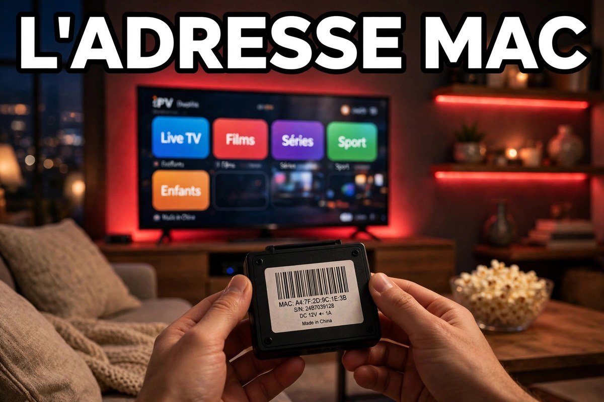
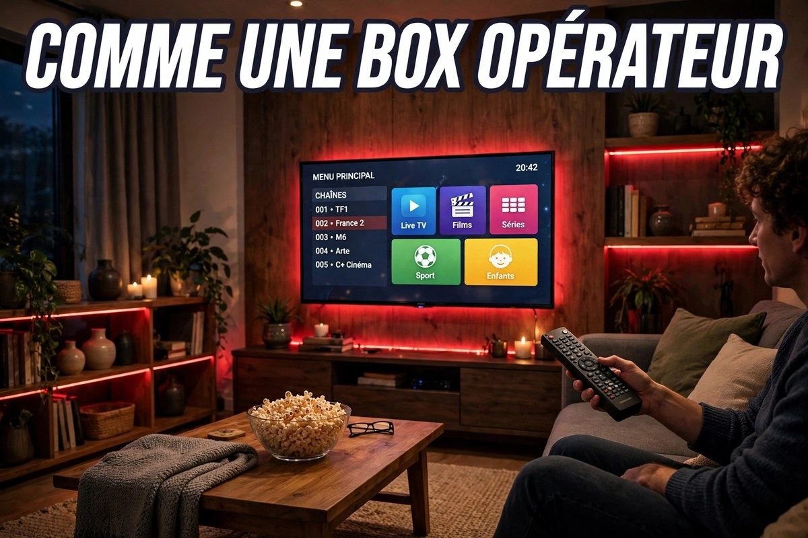
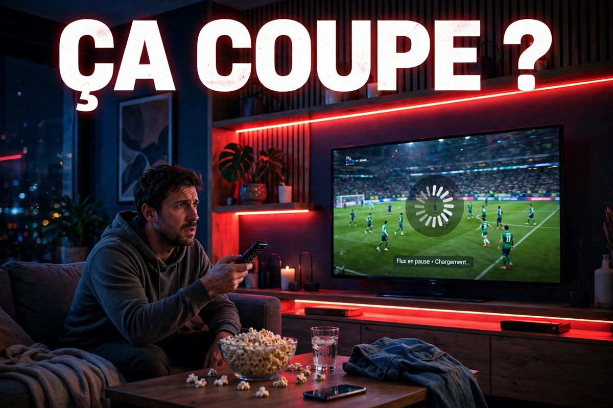

Installation MAG
Configurer l’IPTV sur un boîtier MAG
Configurer l’IPTV sur un boîtier MAG : adresse MAC, URL du portail, navigation, réglages image et son, dépannage et comparaison avec une box Android.

Qu’est-ce qu’un boîtier MAG ?
Dernière vérification : 20 novembre 2026.
Les boîtiers MAG, fabriqués par la société Infomir, sont des décodeurs conçus spécialement pour l’IPTV. Contrairement à une box Android ou à un Fire TV Stick, ils n’ont pas de boutique d’applications : ils se connectent à un portail fourni par votre service IPTV, qui affiche directement une interface de télévision avec les chaînes, la vidéo à la demande et le guide des programmes. Résultat : une expérience très proche d’une box d’opérateur, avec une télécommande dédiée et un zapping rapide.
Ce fonctionnement a un grand avantage : la simplicité au quotidien. Une fois configuré, le boîtier s’allume directement sur vos chaînes, sans application à ouvrir ni mise à jour à surveiller. C’est une solution idéale pour un parent, une résidence secondaire ou toute personne qui veut une télé « qui marche » sans se poser de questions.
Les boîtiers MAG ont aussi la réputation d’être robustes. Ils sont conçus pour rester allumés en permanence, chauffent peu, ne contiennent pas de ventilateur bruyant et fonctionnent pendant des années sans perdre en réactivité, contrairement à certaines box Android qui ralentissent au fil des mises à jour d’applications. Leur interface, pilotée entièrement par le portail, évolue d’ailleurs sans que vous ayez rien à installer : lorsque nous améliorons le portail, votre boîtier en profite au prochain démarrage. C’est pour toutes ces raisons que de nombreux hôtels, résidences et professionnels de l’IPTV les utilisent depuis longtemps. Pour un usage familial, ils restent un excellent choix dès lors que l’on cherche avant tout à regarder la télévision, simplement et sans réglages compliqués.
Ce guide vous explique comment fonctionne l’activation par adresse MAC, comment entrer l’adresse du portail Sunday IPTV, comment régler l’image et comment résoudre les messages d’erreur les plus courants.
Envie de tester ? Essai gratuit de 24 h, activation rapide et aide à l’installation sur WhatsApp.
Demander mon essai gratuitLes modèles de boîtiers MAG
Plusieurs générations de boîtiers MAG sont en circulation. Les plus courants sont les MAG 322, MAG 324, MAG 349, MAG 351, MAG 424, MAG 520 et MAG 524. Tous se configurent de la même façon pour l’IPTV, avec quelques différences :
- les modèles MAG 3xx gèrent la HD et la Full HD, et conviennent très bien à un téléviseur secondaire ;
- les modèles MAG 4xx et 5xx prennent en charge la 4K et le HEVC (H.265), un format qui offre une meilleure qualité à débit égal ;
- certains modèles disposent du Wi-Fi intégré, d’autres nécessitent un adaptateur ou un câble Ethernet.
Le nom du modèle est inscrit sur l’étiquette sous le boîtier et dans le menu d’informations.
Comment fonctionne l’activation par adresse MAC
Chaque boîtier MAG possède une adresse MAC unique, qui commence le plus souvent par 00:1A:79. C’est elle qui sert d’identifiant : au lieu de taper un nom d’utilisateur et un mot de passe, vous communiquez l’adresse MAC de votre boîtier à Sunday IPTV, qui l’enregistre sur le portail. Lorsque le boîtier se connecte, le portail le reconnaît et affiche vos chaînes.
L’activation se fait donc en deux temps :
- Vous nous envoyez l’adresse MAC de votre boîtier.
- Nous vous envoyons l’adresse du portail (une URL) à saisir dans le boîtier.
Étape 1 : trouver l’adresse MAC de votre boîtier

Vous la trouverez à deux endroits :
- sur l’étiquette collée sous le boîtier, à côté du numéro de série ;
- dans le menu du boîtier : ouvrez les Paramètres (bouton SETUP ou SET de la télécommande), puis Informations sur l’appareil ou Infos système.
Notez-la soigneusement, ou prenez l’étiquette en photo. Une seule erreur de caractère et le portail ne reconnaîtra pas votre boîtier. Envoyez-la-nous sur WhatsApp avec la formule choisie : nous activons votre accès et vous envoyons l’adresse du portail.
Étape 2 : brancher le boîtier
- Reliez le boîtier au téléviseur avec le câble HDMI.
- Branchez le câble Ethernet entre le boîtier et la box internet. C’est fortement recommandé : les boîtiers MAG sont conçus pour fonctionner en filaire et c’est ainsi qu’ils sont le plus stables.
- Branchez l’alimentation. Le boîtier démarre et affiche le logo Infomir.
- Sélectionnez la bonne source HDMI sur votre téléviseur.
Si vous devez utiliser le Wi-Fi, configurez-le dans Paramètres, puis Réseau, puis Sans fil (Wi-Fi), en choisissant votre réseau et en saisissant la clé.
Étape 3 : saisir l’adresse du portail
- Au démarrage, ou depuis le menu principal, appuyez sur SETUP (ou SET) pour ouvrir les Paramètres système.
- Ouvrez Serveurs, puis Portails.
- Dans Nom du portail 1, tapez un nom de votre choix, par exemple Sunday IPTV.
- Dans URL du portail 1, tapez l’adresse exacte que nous vous avons envoyée, en respectant chaque caractère, y compris le /c/ final s’il figure dans l’adresse.
- Validez avec OK, puis revenez au menu des paramètres.
- Sélectionnez Redémarrer le portail (ou redémarrez le boîtier).
Le boîtier se connecte au portail, affiche brièvement un écran de chargement, puis l’interface Sunday IPTV apparaît avec vos chaînes. Selon la version du logiciel, les menus peuvent porter des noms légèrement différents, mais la logique reste la même : Paramètres, Serveurs, Portails.
Envie de tester ? Essai gratuit de 24 h, activation rapide et aide à l’installation sur WhatsApp.
Demander mon essai gratuitNaviguer dans le portail

L’interface du portail ressemble à celle d’une box opérateur :
- TV : la liste des chaînes en direct, classées par groupes. Utilisez les flèches pour naviguer et OK pour regarder.
- Vidéo à la demande : les films et séries, classés par catégories, avec une fonction de recherche.
- Guide des programmes : appuyez sur le bouton EPG ou INFO pendant la lecture pour voir ce qui passe maintenant et plus tard.
- Favoris : depuis la liste des chaînes, ajoutez une chaîne aux favoris avec le bouton dédié (souvent F ou une touche de couleur), puis affichez uniquement vos favoris.
Les touches de couleur de la télécommande ouvrent des fonctions contextuelles affichées en bas de l’écran : tri, recherche, ajout aux favoris ou changement de groupe.
Les boutons utiles de la télécommande MAG
La télécommande des boîtiers MAG comporte de nombreuses touches. Voici celles que vous utiliserez le plus :
- SETUP / SET : ouvre les paramètres système, notamment les réglages réseau, vidéo et portails.
- MENU : affiche le menu du portail ou les options contextuelles de l’écran en cours.
- EPG ou INFO : affiche le guide des programmes ou les informations sur l’émission en cours.
- Flèches et OK : naviguent dans les listes et valident les choix.
- CH+ / CH- ou PAGE : changent de chaîne ou font défiler les listes page par page.
- Touches de couleur (rouge, vert, jaune, bleu) : déclenchent les fonctions indiquées en bas de l’écran, comme le tri, la recherche ou l’ajout aux favoris.
- BACK / RETOUR : revient à l’écran précédent.
- Bouton marche : met le boîtier en veille. Pour un redémarrage complet, débranchez l’alimentation quelques secondes.
Si votre télécommande ne répond plus, vérifiez les piles et pointez-la bien vers la façade du boîtier : les télécommandes MAG fonctionnent en infrarouge, sans obstacle entre elles et le récepteur.
Profiter du boîtier au quotidien
Organiser vos chaînes
Comme toute liste IPTV, le portail Sunday IPTV contient des chaînes du monde entier. Commencez par ajouter vos chaînes préférées aux favoris, puis prenez l’habitude d’ouvrir directement la liste des favoris : le zapping devient aussi simple qu’avec une box opérateur. Dans la plupart des portails, vous pouvez aussi trier les chaînes par numéro ou par nom.
Mettre en place un contrôle parental
Le portail propose généralement un code parental qui verrouille l’accès à certains groupes de chaînes ou à certaines catégories de vidéos. Vous le trouverez dans les réglages du portail (souvent via le bouton MENU, puis Paramètres). Choisissez un code personnel plutôt que de conserver le code par défaut, et notez-le dans un endroit sûr.
Laisser le boîtier en veille
Les boîtiers MAG consomment peu d’énergie et redémarrent plus vite depuis la veille. Vous pouvez donc simplement les mettre en veille avec la télécommande. Un redémarrage complet une fois par semaine, en débranchant l’alimentation, permet de repartir sur une base saine.
Régler l’image et le son
Pour une image optimale, prenez quelques minutes pour ajuster les réglages vidéo :
- Ouvrez Paramètres, puis Vidéo (ou Paramètres d’affichage).
- Réglez la résolution de sortie sur celle de votre téléviseur : 1080p pour un écran Full HD, 2160p (4K) pour un écran 4K si votre boîtier le permet.
- Choisissez le mode d’affichage adapté (16:9 pour les téléviseurs modernes).
- Si l’image saccade sur certaines chaînes, activez l’option d’adaptation de la fréquence d’images lorsqu’elle existe.
Côté son, réglez la sortie audio sur PCM si vous n’avez pas de système home cinéma, ou laissez le flux d’origine si vous utilisez un amplificateur compatible.
Mettre à jour le logiciel du boîtier
Un logiciel à jour corrige des bugs et améliore la compatibilité avec les portails. Dans Paramètres, ouvrez Mise à jour du logiciel (ou Software update), choisissez la mise à jour par HTTP et lancez la vérification. Ne débranchez jamais le boîtier pendant une mise à jour : attendez qu’il redémarre seul.
Utiliser plusieurs portails
Les boîtiers MAG peuvent enregistrer plusieurs portails (Portail 1, Portail 2…). C’est utile si vous partagez le boîtier entre plusieurs services ou si nous vous communiquons une adresse de secours. Au démarrage, le boîtier se connecte au premier portail disponible ; vous pouvez changer de portail depuis l’écran de sélection ou les paramètres.
Problèmes fréquents et solutions
« STB is blocked » ou « Boîtier bloqué »
L’adresse MAC n’est pas encore activée sur le portail, ou l’abonnement est arrivé à échéance. Vérifiez que l’adresse MAC envoyée correspond exactement à celle de l’étiquette, puis contactez-nous pour vérifier l’activation.
Le boîtier reste bloqué sur « Chargement du portail »
Vérifiez l’URL du portail caractère par caractère, ainsi que la connexion internet (câble Ethernet bien branché, box allumée). Redémarrez le boîtier en le débranchant trente secondes.
« Authentication error » ou « Erreur d’authentification »
Le portail ne reconnaît pas le boîtier. Le plus souvent, l’adresse MAC communiquée comporte une erreur. Envoyez-nous une photo de l’étiquette pour vérification.
Les chaînes s’affichent mais coupent souvent
Passez en Ethernet si vous êtes en Wi-Fi, redémarrez la box internet et le boîtier, puis testez une chaîne en qualité HD plutôt qu’en 4K. Notre guide panne IPTV détaille toutes les causes possibles.
Le guide des programmes est vide
Attendez quelques minutes après le démarrage, puis redémarrez le portail. Vérifiez que la date, l’heure et le fuseau horaire du boîtier sont corrects dans les paramètres.
Envie de tester ? Essai gratuit de 24 h, activation rapide et aide à l’installation sur WhatsApp.
Demander mon essai gratuitMAG ou box Android : que choisir ?
Le boîtier MAG est imbattable en simplicité : il démarre directement sur la télé, sans application. En revanche, il est moins polyvalent qu’une box Android ou qu’un Fire TV Stick, qui donnent accès à YouTube, aux applications de streaming et aux lecteurs IPTV les plus avancés comme TiviMate. Si vous voulez uniquement regarder la télé, le MAG est parfait. Si vous voulez un appareil à tout faire, comparez les options dans notre guide quel boîtier IPTV choisir.
Questions fréquentes
Mon boîtier MAG est-il compatible avec Sunday IPTV ?
Oui, tous les boîtiers MAG récents fonctionnent avec notre portail. Envoyez-nous simplement l’adresse MAC de votre boîtier pour l’activation.
Puis-je utiliser le même abonnement sur un MAG et sur un téléphone ?
L’accès MAG est lié à l’adresse MAC du boîtier. Pour utiliser aussi une application sur téléphone ou sur une autre télé, demandez-nous des identifiants Xtream Codes ou une offre multi-connexions.
Faut-il obligatoirement un câble Ethernet ?
Ce n’est pas obligatoire sur les modèles équipés du Wi-Fi, mais c’est fortement recommandé : les boîtiers MAG sont beaucoup plus stables en filaire, en particulier pour la 4K et le sport en direct.
Que faire si je change de boîtier ?
Envoyez-nous la nouvelle adresse MAC : nous transférons votre abonnement sur le nouveau boîtier, puis vous saisissez la même adresse de portail.
Le replay fonctionne-t-il sur un boîtier MAG ?
Oui, sur les chaînes qui le proposent. Ouvrez le guide des programmes, revenez sur une émission déjà diffusée et lancez-la depuis le début.
Testez Sunday IPTV gratuitement
Essai gratuit de 24 heures, activation rapide et support 24/7 sur WhatsApp.
Demander mon essaiÀ lire aussi
Quel boîtier IPTV choisir en 2026 ?
Quel boîtier IPTV choisir en 2026 ? Fire TV Stick, box Android TV, Apple TV 4K ou boîtier MAG : comparatif, critères qui comptent et erreurs à éviter.

Panne IPTV : résoudre les coupures et le buffering
Panne IPTV, buffering ou chaîne qui coupe ? Diagnostic en 5 minutes, causes fréquentes, réglages réseau et appareil pour retrouver une lecture fluide.

Qu’est-ce que l’IPTV ? Explication complète (2026)
Qu’est-ce que l’IPTV ? Fonctionnement de la télé par internet, matériel nécessaire, Xtream Codes et M3U, appareils compatibles et différences avec le satellite.